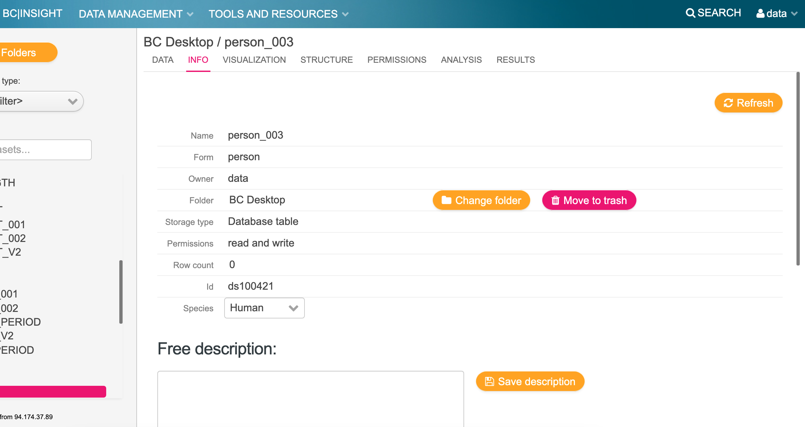

ETL Guide
1. Initial Setup¶
The following is a walkthrough of how to run an automated ETL process using test data available as part of the package.
It is assumed that BCLink systems has already been an installed on a host machine.
Setting up a working directory
When running the ETL with the bclink backend, you must be the user bcos_srv, i.e. when ssh'd into the machine hosting bclink:
ssh <username>@<IP address of host machine>
sudo -s
su - bcos_srv
The best practise is to create a working directory in the following location:
mkdir /usr/lib/bcos/MyWorkingDirectory/
cd /usr/lib/bcos/MyWorkingDirectory/
Installing carrot-cdm
It is also best practise to setup a virtual python environment and install the tool:
python3 -m venv automation
source automation/bin/activate
pip install pip --upgrade
pip install carrot-cdm
Check the version:
carrot info version
>=0.5.0 for the automation to work.
2. Setup Data¶
Setup your inputs and obtain the rules.json for performing the transform (OMOP mapping).
Get inputs
We recommend that you download the test dataset from CO-CONNECT/demo-dataset, otherwise a smaller test dataset can be foud in the following location: $(carrot info data_folder)/test/
Note
You will have to have git installed for this to work. You can do this while being sudo user, for example on CentOS:
sudo yum install git
git installed, you can either contact your system administrator, or follow the link to the github page, click "code" and then "Download ZIP".
git clone https://github.com/CO-CONNECT/demo-dataset.git
ls demo-dataset/data/
config.yaml config-template.yaml part1 part2 part3 rules.json rules_small.json
json file:
carrot display rules json demo-dataset/data/rules.json |& head -15
{
"metadata": {
"date_created": "2022-02-11T12:22:48.465257",
"dataset": "FAILED: ExampleV4"
},
"cdm": {
"person": {
"MALE 3025": {
"birth_datetime": {
"source_table": "Demographics.csv",
"source_field": "Age",
"operations": [
"get_datetime_from_age"
]
},
Note
If you are following this guide with the example dataset, as long as you have copied or downloaded data as user bcos_srv, then all should be OK.
To the run the tool and automatically upload data to bclink, you must be logged in as the user bcos_srv, therefore this user must have permissions to view the data. So double-check or grant access.
Granting data access to a user
There are many ways of doing this on CentOS via chown and/or chmod. You should contact your system administrator to do this if your are not experienced and/or don't have root access (that you may need).
chown -R <user/group>:<group> <path to data>
3. Setup a yaml configuration file¶
The next step is to create and configure a yaml file for the tool to digest. This yaml file must contain the location of the "rules" json file, provided to you by the connect team, and the path of the input data.
Minimal YAML
Create a file called config.yaml, either as a new file or copy over the cp demo-dataset/data/config-template.yaml config.yaml and edit the values:
settings:
clean: <bool>
load: &load-bclink
cache: <str: cache folder>
bclink:
dry_run: <bool>
transform:
settings: &settings
output: *load-bclink
rules: <str: rules .json file>
data:
- input: <str: first input data folder>
<<: *settings
- input: <str: additional input data folder>
<<: *settings
Example template to use if you have copied over and are useing the demo-dataset:
settings:
clean: true
load: &load-bclink
cache: /usr/lib/bcos/MyWorkingDirectory/cache/
bclink:
dry_run: false
transform:
settings: &settings
output: *load-bclink
rules: /usr/lib/bcos/MyWorkingDirectory/demo-dataset/data/rules.json
data:
- input: /usr/lib/bcos/MyWorkingDirectory/demo-dataset/data/part1/
<<: *settings
Note
If you are unfamilar with the Linux command-line and don't know how to create a file, try using vim, pico or emacs commands.
Once you have created the file, you should save and quit.
YAML with multiple data folders
Similarly if you have multiple data dumps, you can configure the yaml like so:
transform:
settings: ...
data:
- input: <folder 1>
<<: *settings
data:
- input: <folder 2>
<<: *settings
Note
While the tool is running you can edit this file to append more data paths...
YAML to watch a directory for new data dumps
Specifying the data in the transform section as a dictionary will tell the tool to look inside the master folder for subfolders containing the data
transform:
settings: ...
data:
input: <master folder>
<<: *settings
4. Setup and Check BCLink tables¶
By default, if the Carrot documentation for setting up BCLink has been followed correctly, you should already have tables created for the various bclink tables, e.g.:
- person
- condition_occurrence
- measurement
- observation
- drug_exposure
- etc..
Check if your tables exist
With a minimal yaml configuration, you can perform a check to see if the tables exist and that the tool is able to interact with them.
carrot etl --config config.yaml check-tables
2022-03-15 12:56:02 - run_etl - INFO - running etl on config.yaml (last modified: 1647348863.9978611)
...
2022-03-15 12:56:02 - BCLinkHelpers - NOTICE - bc_sqlselect --user=bclink --query=SELECT EXISTS (SELECT 1 FROM information_schema.tables WHERE table_name = 'condition_occurrence' ) bclink
2022-03-15 12:56:02 - BCLinkHelpers - INFO - condition_occurrence (condition_occurrence) already exists --> all good
2022-03-15 12:56:02 - BCLinkHelpers - NOTICE - bc_sqlselect --user=bclink --query=SELECT EXISTS (SELECT 1 FROM information_schema.tables WHERE table_name = 'drug_exposure' ) bclink
2022-03-15 12:56:02 - BCLinkHelpers - INFO - drug_exposure (drug_exposure) already exists --> all good
...
2022-03-15 12:56:03 - BCLinkHelpers - INFO - ======== BCLINK SUMMARY ========
2022-03-15 12:56:03 - BCLinkHelpers - INFO - {
"condition_occurrence": {
"bclink_table": "condition_occurrence",
"nrows": "63988"
},
"drug_exposure": {
"bclink_table": "drug_exposure",
"nrows": "33015"
},
...
If there is an error here, you may need to manually configure the table in the yaml file (see here)
If you need to create new tables via the GUI
If you want to do some testing on new tables
Log in to the bclink web-gui as the 'data' user.
Create a table (example person)

Make a not of the dataset name and ID of the dataset i.e. ds100421

If you need to create new tables via the command line
Creating a person table called person_test_data_v1
cd /usr/lib/bcos/OMOP
$dataset_tool --create --form=PERSON --table=person_test_data_v1 --setname='PERSON_TEST_DATA_V1' --user=data bclink
Created dataset with table person_test_data_v1
You would then have to specify in the yaml configuration the name of these tables so the tool is able to know e.g. which table to insert the person into, for example:
load: &load-bclink
bclink:
tables:
person: person_test_data_v1
...
CaRROT-CDM also has this feature to create tables based on what has been setup in the yaml configuration file
carrot etl --config <config> create-tables
2022-03-15 13:41:39 - run_etl - INFO - running etl on config.yaml (last modified: 1647351696.3011575)
2022-03-15 13:41:39 - BCLinkHelpers - NOTICE - bc_sqlselect --user=bclink --query=SELECT EXISTS (SELECT 1 FROM information_schema.tables WHERE table_name = 'person_test_003' ) bclink
2022-03-15 13:41:39 - BCLinkHelpers - NOTICE - dataset_tool --create --table=person_test_003 --setname=PERSON_TEST_003 --user=data --form=PERSON bclink
2022-03-15 13:41:39 - BCLinkHelpers - INFO - Created dataset with table person_test_003
--> All done with success.
...
If you needed to create tables / if your table check fails
If you have had problems with your tables and need to overwrite the default behaviour of the tool, you can append to the yaml file the following configurtion, to force the tool to upload the output (destination) tables to specific BCLink tables
bclink:
tables:
person: <bclink id of person table>
observation: <bclink id of observation table>
measurement: <bclink id of measurement table>
condition_occurrence: <bclink id of condition_occurrence table>
5. Clean the tables¶
Before you run the ETL (for the first time), it's important to make sure there's no existing data present in the tables you are uploading to.
From the Command Line
carrot etl --config config.yaml clean-tables
2022-03-15 13:42:51 - run_etl - INFO - running etl on config.yaml (last modified: 1647351753.2908654)
2022-03-15 13:42:51 - BCLinkHelpers - NOTICE - bc_sqlselect --user=bclink --query=SELECT EXISTS (SELECT 1 FROM information_schema.tables WHERE table_name = 'condition_occurrence' ) bclink
2022-03-15 13:42:51 - BCLinkHelpers - INFO - condition_occurrence (condition_occurrence) already exists --> all good
...
2022-03-15 13:42:51 - BCLinkHelpers - NOTICE - datasettool2 delete-all-rows condition_occurrence --database=bclink
2022-03-15 13:42:53 - BCLinkHelpers - WARNING - Deleting all rows from dataset CONDITION_OCCURRENCE (condition_occurrence)
2022-03-15 13:42:53 - BCLinkHelpers - WARNING - Deleted all 63988 rows from dataset CONDITION_OCCURRENCE (condition_occurrence)
2022-03-15 13:42:53 - BCLinkHelpers - INFO - Cleaning table drug_exposure
2022-03-15 13:42:53 - BCLinkHelpers - NOTICE - datasettool2 delete-all-rows drug_exposure --database=bclink
...
2022-03-15 13:43:07 - BCLinkHelpers - INFO - ======== BCLINK SUMMARY ========
2022-03-15 13:43:07 - BCLinkHelpers - INFO - {
"condition_occurrence": {
"bclink_table": "condition_occurrence",
"nrows": "0"
},
"drug_exposure": {
"bclink_table": "drug_exposure",
"nrows": "0"
},
"measurement": {
"bclink_table": "measurement",
"nrows": "0"
},
"observation": {
"bclink_table": "observation",
"nrows": "0"
},
Specify within the YAML
Alternatively you can tell the tool to do this automatically by specifying it in the yaml configuration file, by appending the configuration. Everytime carrot etl is executed, the tables present in BCLink will be cleaned:
settings:
clean: true
6. Run the ETL¶
Finally you are ready to execute the ETL...
Start the carrot ETL
carrot etl --config config.yaml
Start of the Process¶
2022-03-15 13:47:57 - run_etl - INFO - running etl on config.yaml (last modified: 1647352068.9562533)
2022-03-15 13:47:57 - LocalDataCollection - INFO - DataCollection Object Created
2022-03-15 13:47:57 - LocalDataCollection - INFO - Registering Demographics.csv [<carrot.io.common.DataBrick object at 0x7f0c5a82a5c0>]
2022-03-15 13:47:57 - LocalDataCollection - INFO - Registering GP_Records.csv [<carrot.io.common.DataBrick object at 0x7f0c5a82a9b0>]
...
2022-03-15 13:47:57 - BCLinkHelpers - NOTICE - bc_sqlselect --user=bclink --query=SELECT EXISTS (SELECT 1 FROM information_schema.tables WHERE table_name = 'condition_occurrence' ) bclink
2022-03-15 13:47:57 - BCLinkHelpers - INFO - condition_occurrence (condition_occurrence) already exists --> all good
...
Building the Model¶
...
2022-03-15 13:47:58 - BCLinkDataCollection - INFO - DataCollection Object Created
2022-03-15 13:47:58 - CommonDataModel - INFO - CommonDataModel (5.3.1) created with carrot-cdm version 0.0.0
2022-03-15 13:47:58 - CommonDataModel - INFO - Running with an DataCollection object
2022-03-15 13:47:58 - CommonDataModel - INFO - Turning on automatic cdm column filling
...
Extracting data¶
...
2022-03-15 13:47:58 - BCLinkHelpers - NOTICE - bc_sqlselect --user=bclink --query=SELECT * FROM person_ids bclink
2022-03-15 13:47:58 - BCLinkHelpers - NOTICE - bc_sqlselect --user=bclink --query=SELECT count(*) FROM condition_occurrence bclink
...
Adding Health Data Element¶
2022-03-15 13:47:58 - CommonDataModel - INFO - Added Mental health problem 3046 of type condition_occurrence
2022-03-15 13:47:58 - CommonDataModel - INFO - Added Mental disorder 3047 of type condition_occurrence
2022-03-15 13:47:58 - CommonDataModel - INFO - Added Type 2 diabetes mellitus 3048 of type condition_occurrence
Transforming data¶
Preparing everything:
...
2022-03-15 13:47:58 - CommonDataModel - INFO - Starting processing in order: ['person', 'observation', 'condition_occurrence', 'drug_exposure']
2022-03-15 13:47:58 - CommonDataModel - INFO - Number of objects to process for each table...
{
"person": 2,
"observation": 4,
"condition_occurrence": 12,
"drug_exposure": 5
}
2022-03-15 13:47:58 - CommonDataModel - INFO - for person: found 2 objects
2022-03-15 13:47:58 - CommonDataModel - INFO - working on person
2022-03-15 13:47:58 - CommonDataModel - INFO - starting on MALE 3025
2022-03-15 13:47:58 - Person - INFO - Called apply_rules
2022-03-15 13:47:58 - LocalDataCollection - INFO - Retrieving initial dataframe for 'Demographics.csv' for the first time
...
...
2022-03-15 13:48:05 - CommonDataModel - INFO - starting on FEMALE 3026
2022-03-15 13:48:05 - Person - INFO - Called apply_rules
2022-03-15 13:48:06 - Person - INFO - Mapped birth_datetime
2022-03-15 13:48:06 - Person - INFO - Mapped gender_concept_id
2022-03-15 13:48:06 - Person - INFO - Mapped gender_source_concept_id
2022-03-15 13:48:06 - Person - INFO - Mapped gender_source_value
2022-03-15 13:48:06 - Person - INFO - Mapped person_id
2022-03-15 13:48:06 - Person - WARNING - Requiring non-null values in gender_concept_id removed 55732 rows, leaving 44268 rows.
2022-03-15 13:48:06 - Person - INFO - Automatically formatting data columns.
2022-03-15 13:48:06 - Person - INFO - created df (0x7f0c57843908)[FEMALE_3026]
2022-03-15 13:48:06 - CommonDataModel - INFO - finished FEMALE 3026 (0x7f0c57843908) ... 2/2 completed, 44268 rows
...
2022-03-15 13:48:09 - BCLinkDataCollection - INFO - saving person.FEMALE_3026.0x7f0c57843908.2022-03-15T134809 to /usr/lib/bcos/MyWorkingDirectory/Temp/cache//person.FEMALE_3026.0x7f0c57843908.2022-03-15T134809.tsv
...
Loading Data¶
Making jobs to load the data
...
2022-03-15 13:48:09 - BCLinkHelpers - NOTICE - dataset_tool --load --table=person --user=data --data_file=/usr/lib/bcos/MyWorkingDirectory/Temp/cache//person.FEMALE_3026.0x7f0c57843908.2022-03-15T134809.tsv --support --bcqueue bclink
2022-03-15 13:48:10 - BCLinkHelpers - INFO - submitted job to bclink queue: link-test-dt:bcos_srv-336
2022-03-15 13:48:10 - BCLinkHelpers - NOTICE - datasettool2 list-updates --dataset=person --user=data --database=bclink
2022-03-15 13:48:13 - BCLinkHelpers - INFO - running job 10983
...
2022-03-15 13:56:19 - BCLinkHelpers - NOTICE - cat /data/var/lib/bcos/download/data/job11043/cover.11043
2022-03-15 13:56:19 - BCLinkHelpers - TEXT -
2022-03-15 13:56:19 - BCLinkHelpers - TEXT - Job #11042 Tue Mar 15 13:56:06 2022 BC|SNPmax 6.0.0-rc21
2022-03-15 13:56:19 - BCLinkHelpers - TEXT - ### Application: supp-dataload-batch
2022-03-15 13:56:19 - BCLinkHelpers - TEXT - ### User: data
2022-03-15 13:56:19 - BCLinkHelpers - TEXT - ### Database: bclink
2022-03-15 13:56:19 - BCLinkHelpers - TEXT - ### Run on local/localhost.localdomain
2022-03-15 13:56:19 - BCLinkHelpers - TEXT -
2022-03-15 13:56:19 - BCLinkHelpers - TEXT - Job description: Upload of file /usr/lib/bcos/MyWorkingDirectory
/Temp/cache//drug_exposure.COVID_19_vaccine_3036.0x7f0c55b86390.2022-03-15T135606.tsv
2022-03-15 13:56:19 - BCLinkHelpers - TEXT - ================================================================
========
2022-03-15 13:56:19 - BCLinkHelpers - TEXT - --> No data converter selected
2022-03-15 13:56:19 - BCLinkHelpers - TEXT - --> Adding new data, duplicates are discarded and reported
2022-03-15 13:56:19 - BCLinkHelpers - TEXT -
2022-03-15 13:56:19 - BCLinkHelpers - TEXT - ===Summary report===
2022-03-15 13:56:19 - BCLinkHelpers - TEXT - --> OK
2022-03-15 13:56:19 - BCLinkHelpers - CRITICAL - 110 data row(s) discarded, 23389 new row(s) inserted
2022-03-15 13:56:19 - BCLinkHelpers - TEXT - ---> See attachments
2022-03-15 13:56:19 - BCLinkHelpers - TEXT -
2022-03-15 13:56:19 - BCLinkHelpers - TEXT - ===Detailed report===
2022-03-15 13:56:19 - BCLinkHelpers - TEXT -
...
Finished!¶
...
2022-03-15 13:56:19 - BCLinkHelpers - TEXT - --> OK
2022-03-15 13:56:19 - BCLinkHelpers - CRITICAL - 115 data row(s) discarded, 23384 new row(s) inserted
2022-03-15 13:56:19 - BCLinkHelpers - TEXT - ---> See attachments
2022-03-15 13:56:19 - BCLinkHelpers - TEXT -
2022-03-15 13:56:19 - BCLinkHelpers - TEXT - ===Detailed report===
2022-03-15 13:56:19 - BCLinkHelpers - TEXT -
2022-03-15 13:56:19 - BCLinkDataCollection - INFO - done!
If the yaml contains:
settings:
listen_for_changes: true
Instead you will see the message:
2022-03-15 13:59:58 - run_etl - INFO - Finished!... Listening for changes every 5 seconds to data in config.yaml